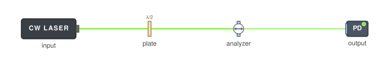

Half-wave power attenuator · Rendered by OpticalSetup from the downloadable setup. View full-size preview ↗Model limits. Ideal retardance and Malus-law attenuation are traced; absorption heating and wavelength-dependent plate errors are absent.
The setup
A half-wave plate at 22.5° rotates a horizontal 532 nm input to 45°; a horizontal analyzer passes half the input power.
- Read half-power transmission at 22.5° in the live scene.
- Rotate the HWP to 0° and 45° to compare full transmission and extinction.
Components in this setup
Arrangement and variants
Half-wave plate followed by a polarizer or polarizing beamsplitter.
Design constraints
Input polarization, wavelength, extinction, and rejected-power handling matter.